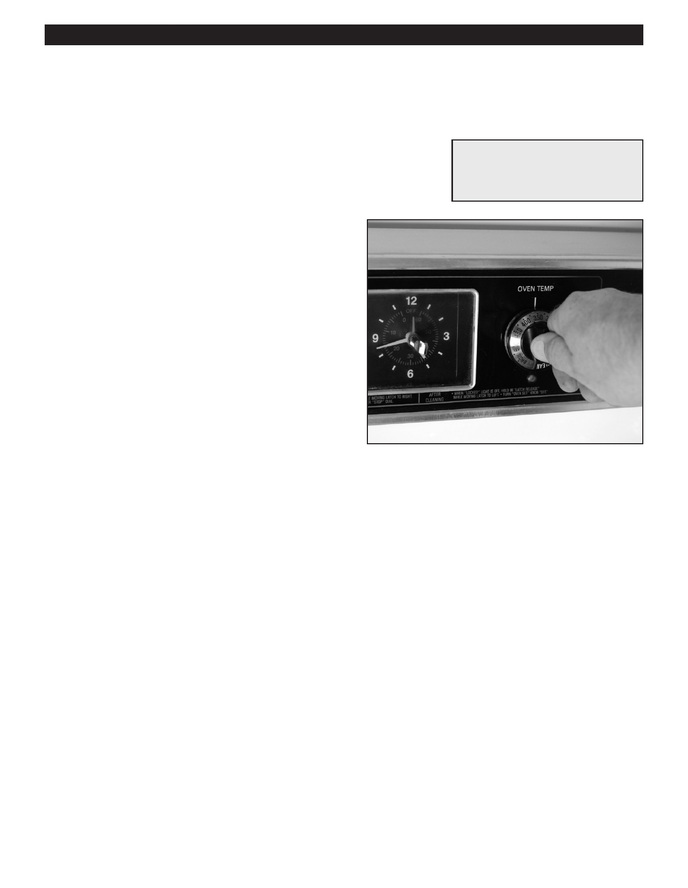

PA RT I C I PA N T R E S O U R C E G U I D E
Recalibrating the Oven Temperature
If oven temperatures are off, the thermometer may need to be recalibrated.
Tools and Materials Needed
Screwdriver
Oven thermometer
How-to Steps: Checking the Oven
Temperature
1. Place digital thermometer in the oven
2. Turn the oven to a specific temperature (300º is good)
3. Allow oven to cycle (heat up)
4. When the element cycles off, note the temperature.
5. Allow the temperature to drop in the oven.
6. When the element cycles back on, note the temperature.
7. Repeat steps 3-6 twice more
8. Add the six temperature measurements up and divide by six.
9. Match this average to the temperature selected
10. If temperature is off by more than 20º or less. Follow
instructions to recalibrate the oven temperature.
Notes:
11. If temperature is off by more than 20º replace control.
How-to Steps: Recalibrating
the Oven Temperature
1. Take off oven control knob.
2. On knobs with a ring:
• Loosen screws.
• Turn knob to adjust ring appropriately to either raise
or lower the temperature.
• Tighten screws.
3. On knobs without a ring:
• Penetrate seal with screwdriver.
• Turn inside screw about 1/8-turn.
4. Replace the knob on the control panel.
54